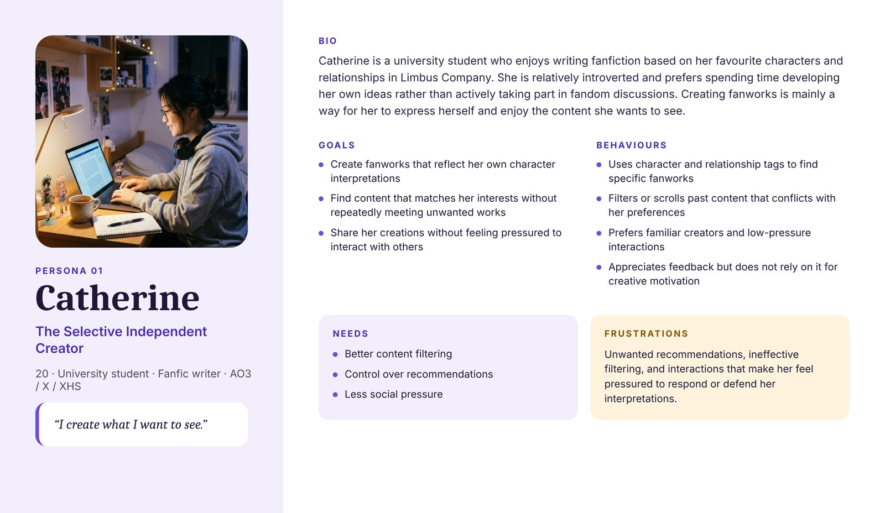
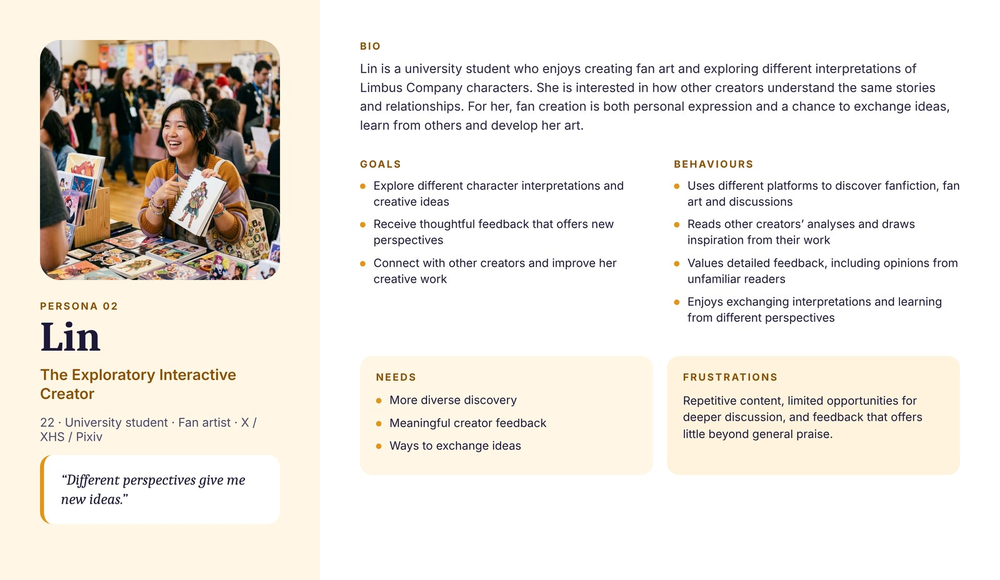
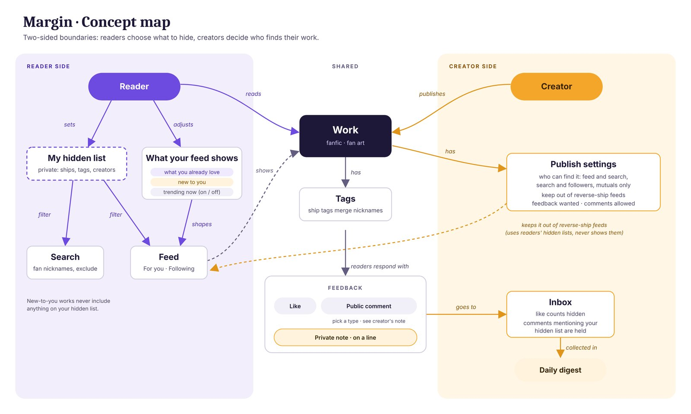
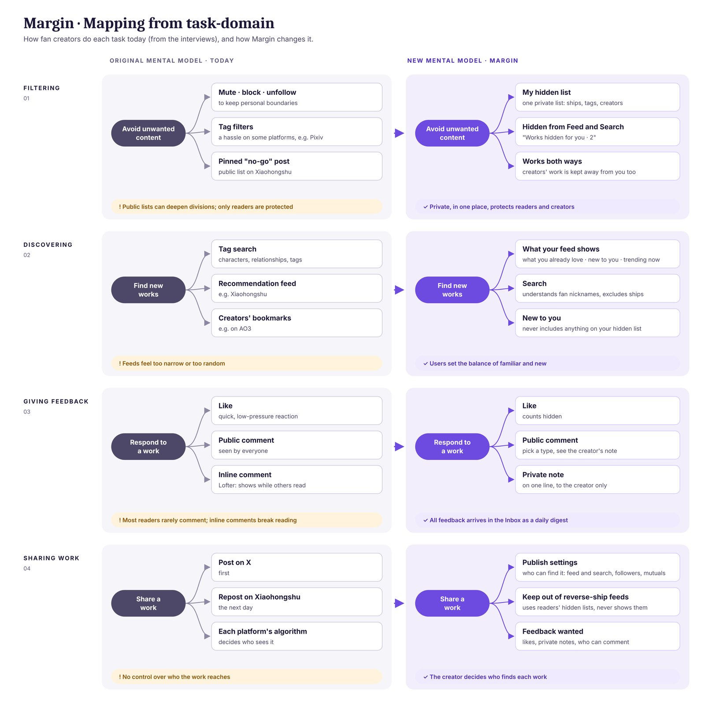
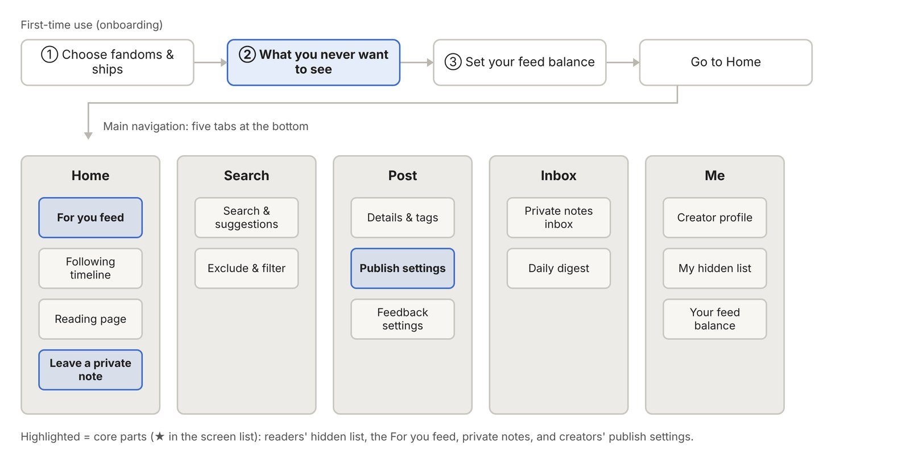
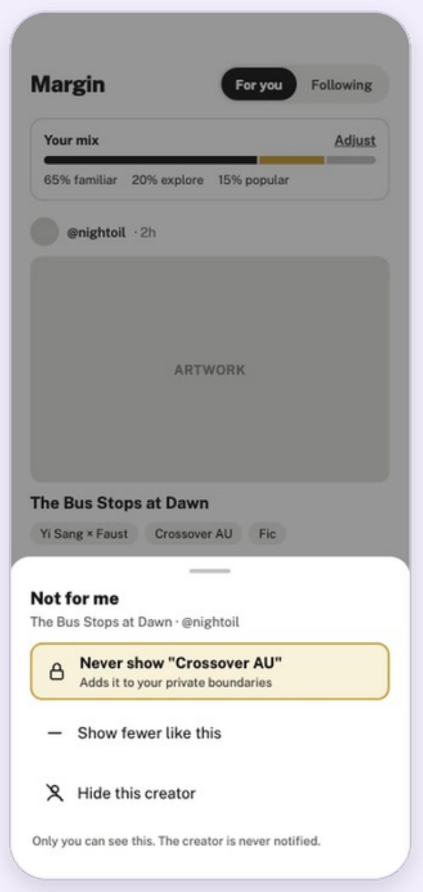
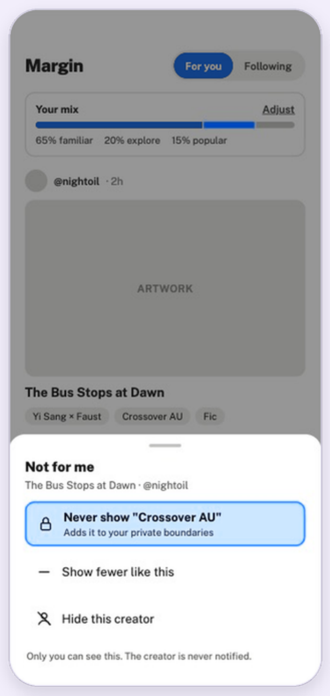
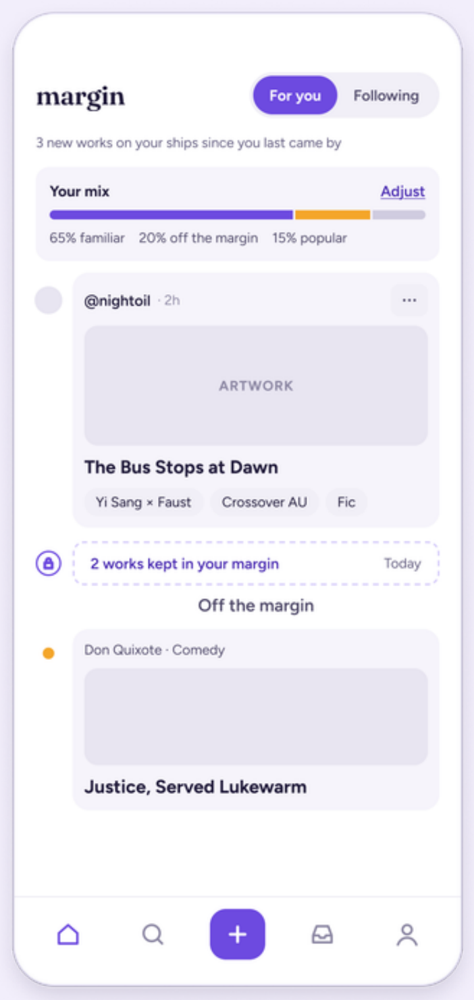
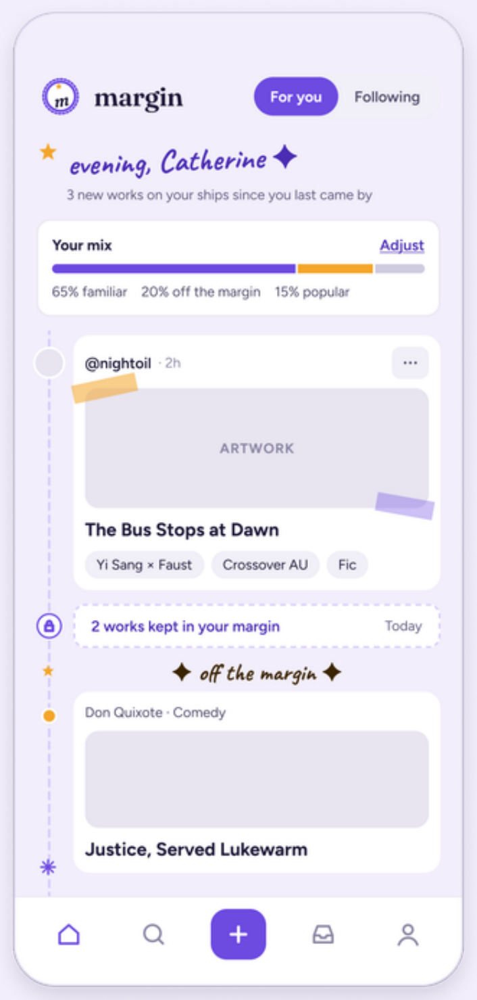

Problem
Fan creators told me they get recommendations they never asked for, find filtering tedious, and can face hostile comments, especially when a work reaches fans of a rival pairing.
Safer sharing for fanwork communities.
Margin is a mobile app concept for fan creators. Readers privately hide the ships, tags and creators they never want to see, and creators decide who can find their work.
Fan creators told me they get recommendations they never asked for, find filtering tedious, and can face hostile comments, especially when a work reaches fans of a rival pairing.
Two-sided boundaries. Readers control what they see without losing discovery. Creators control who finds their work.
Fan writers and fan artists. I researched with fans of Limbus Company and designed for fan creators more broadly.
Individual project. I handled recruiting, interviewing, synthesis, personas, concept and conceptual model, information architecture, prototype and usability test.
I used an AI assistant (Claude) for drafting presentation text, diagrams, persona images, an interview comparison table, and prototype and test-scenario support. Interviews, recruitment, design decisions and the usability test were mine.
I chose a community I already knew, the Limbus Company fandom, and recruited five members through personal connections. The participants did not all know each other. Knowing the community made recruiting easier and helped me write better interview questions.
| Code | Method |
|---|---|
| A | One-to-one online interview |
| D | One-to-one online interview |
| B and C | Paired online interview |
| E | Written questionnaire |
Select a participant to see which findings came from them.
Select an insight to see where it shows up in Catherine's journey below.


Catherine draws mainly on A and E. Lin draws mainly on C, so her evidence is thinner.
From the personas I wrote five problem statements, each with How Might We questions. Filter by persona.
Empathy map for Catherine: an assumption-based synthesis built from the interview data.
Each step is tagged with the insight it supports.
I compared X, Xiaohongshu, AO3, Lofter and Pixiv: how users search, filter, browse and interact with fanworks.
Who and what a fan creator deals with, from close contacts to the wider environment. Hover or tap a node to see its connections.
Two platforms sit at opposite ends of how fanworks reach a reader.
The research pointed to three directions: more control, keep discovery, and better interaction. I combined them into one concept, two-sided boundaries: readers set what they never want to see, and creators set who can find their work.



Interviews showed one problem hurting both sides: readers meet content they never wanted, and creators are attacked when their work is pushed to rival-ship fans. Both come from content reaching the wrong people, so I built one shared mechanism instead of three separate features. A reader's hidden list cleans their own feed, and the same signal lets a creator keep a work out of reverse-ship feeds. Nobody's list is ever shown, so the boundary works without confrontation.
In the information architecture, each control sits where the need appears in Catherine's journey. Hiding is on every card, where she hits a tag she avoids. "Who can find this" is on the publish screen, where she worries about who will see her work. Feed balance sits at the top of Home, so discovery stays visible instead of buried in settings.
I moved from information architecture to wireframes, then to a clickable Figma prototype in which filtering works.
| Insight | Feature |
|---|---|
| Control without losing discovery | Hidden list to hide ships, tags and creators. Feed balance: what you already love, new to you, trending now. |
| Filtering protects creators | Publish settings: choose who can find a work and keep it out of reverse-ship feeds. |
| Low-pressure but meaningful feedback | Private notes a reader can leave for the creator. |
Tap the orange outlined areas, or pick a step. Scroll inside the phone on long screens. Screens are exported from my Figma prototype.
Hiding is private. The menu and toast say "Only you can see this", because participants described public arguments and pinned "no-go" posts as things that deepen divides.
A toast with Undo replaces a confirmation dialog. Hiding is low-risk and reversible, so the reader stays in the feed instead of being stopped by a pop-up.
Each "Who can find this" option states its result in one line, such as "Never pushed into anyone's feed", so creators choose by outcome rather than by setting name.
Creators choose the feedback they want, such as likes and private notes, which gives readers a low-pressure way to say something meaningful.
I iterated the visual design four times and the wording twice. Two changes taught me the most.
My first labels used the "margin" metaphor, such as "Add to my margins". When I reviewed my own prototype they needed explaining. Following Krug's "Don't make me think", I replaced them with plain language: "Hide … for me", "What do you never want to see?", "Private note", "Publish settings". The app name stays Margin.
A purple tick on selected tags suggested "I want this", but it meant "hide this". I redesigned the state as an amber "Hidden" chip with an eye-off icon so the meaning shows at a glance.
I also added a tap target on the "…" button of each card, next to long-press, so the menu is easier to find.




Earlier versions still show the original metaphor labels, which I replaced later.
I tested the prototype with one new participant, not one of the five interviewees, in an in-person, moderated think-aloud session with two task scenarios.
I did not change the publish page after this test. Next, I would make reverse-ship protection part of the "Who can find this" choice and explain its benefit next to "Search and followers only", then test it again with more participants.
Margin is a fanwork community app concept in which readers privately hide ships, tags and creators, and creators decide who can find their work. I delivered a conceptual model, information architecture, wireframes and a clickable Figma prototype with working filtering. The impact is qualitative and early: one participant completed the reader task smoothly, and the test exposed a clear problem in the creator task.
1. Clear labels matter more than clever ones.
I first used the "margin" metaphor in labels such as "Add to my margins". When I reviewed my own prototype, I found these labels needed explaining. Following Krug's principle "Don't make me think", I replaced them with plain language ("Hide … for me", "What do you never want to see?"). I kept the app name Margin, but made sure the actions on screen are self-explanatory.
2. A state must look like what it means.
The purple tick on selected tags suggested "I want this", but it actually meant "hide this". Each wrong reading adds a question mark for the user. I redesigned the state as an amber "Hidden" chip with an eye-off icon, so the meaning is visible at a glance.
3. The presence of a feature does not necessarily mean it is fully optimised.
During the final round of user testing, the participant stopped exploring further down the page once she found a feature that satisfied her needs. This suggests that the key features I wanted to highlight still lacked sufficient visual cues and interaction prompts to encourage further exploration.
Test the publish page again with more participants after changes.